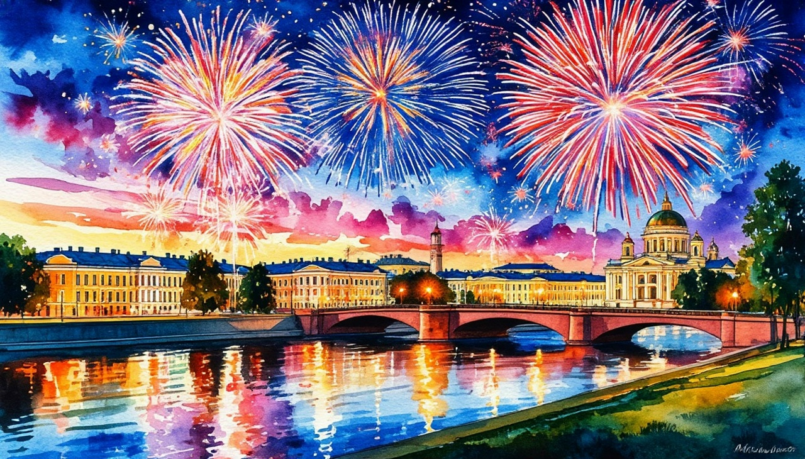

День Победы в Беларуси.

Даты тура: 7 - 11 мая
Стоимость тура:
- 35 400 р. - взрослый
- 35 200 р. - пенсионеры/школьники
- 40 200 р./чел - одноместное размещение
По программе:
- - Экскурсия по Миру
- - Посещение Мирского замка
- - Экскурсия в Несвижском замке
- - Автобусно-пешеходная экскурсия по Минску
- - Обзорная экскурсия по Витебску
Программа тура:
1 день:
- 12-00- выезд из Костромы от ТРЦ "РИО" (Ул. Магистральная, 20), правый угол от центрального входа
2 день:
- Прибытие в Мир. Встреча с гидом.
- Завтрак в кафе города.
- Экскурсия по Миру. Входные билеты в Мирский замок - памятник оборонного зодчества Беларуси (XVI в.), внесенный в каталог мирового культурно-исторического наследия ЮНЕСКО, выдающееся произведение белорусского зодчества. Взору откроется богатый замок эпохи средневековья, своей монументальностью и неприступностью олицетворяющий силу и неограниченную власть феодала. Посещение Мирского замка по входным билетам, самостоятельный осмотр.
- Выезд в Несвиж.
- На экскурсии по Несвижу будет возможность увидеть знаменитый белорусский замок. Вы сможете оценить его мощь, прикоснуться к древним стенам, почувствовать дух минувших эпох и узнать тайны белорусской истории. Экскурсия в Несвижском замке с гидом, либо персональный аудиогид для каждого туриста.
- Несвиж - один из самых значимых в истории Великого Княжества Литовского город, увенчанный коронованным орлом Радзивиллов, самых могущественных магнатов княжества.
- Несвижский дворцово-парковый комплекс, включённый в список Всемирного наследия ЮНЕСКО, с разноплановой архитектурой и крупнейшим ландшафтным парком.
- Осмотр дворцово-замкового ансамбля, построенного по проекту итальянского зодчего Джованни Бернардони, того самого, который участвовал в строительстве и реконструкции знаменитого собора Петра и Павла в Риме.
- Обед в кафе.
- Переезд в Минск, заселение в гостиницу.
- Свободное время.
3 день:
- Завтрак в гостинице.
- Выезд на обзорную автобусно-пешеходную экскурсию по городу.
- Вы погуляете по оживлённому центру Минска и увидите его главные места: краснокирпичный костёл Святых Симеона и Елены, Дом Правительства, мэрию, университеты и бывшие доходные дома. Пройдёте по улицам Комсомольская и Революционная — несмотря на советские названия, сегодня они пронизаны европейским колоритом.
- В Троицком предместье, квартале XIX века, вы зайдете в старинную аптеку и узнаете, какое здание находилось рядом с ней два столетия назад. Заглянете в жилой дворик, увидите здание действующей синагоги и, если повезет, прикоснетесь к цветущему папоротнику. В завершение посетите остров Скорби и Печали, созданный в память о погибших в Афганистане.
- Экскурсия в Мемориальный комплекс Хатынь. Вас ждет экскурсия по мемориальному комплексу «Хатынь» с профессиональным гидом, который расскажет вам душераздирающую историю деревни Хатынь.
- В память сотен белорусских деревень, уничтоженных нацистами в годы Великой Отечественной войны и огромного вклада белорусского народа, принесшего неисчислимые жертвы во имя победы, в январе 1966г. ЦК КПБ принял решение о создании в Логойском районе мемориального комплекса «Хатынь»..
- Переезд в Минск.
- Свободное время на празднование Дня Победы. Обед в этот день программой тура не предусмотрен!
- В это время в Минске будут проходить концерты, торжественный салют. Программа уточняется.
4 день:
- Завтрак в гостинице. Освобождение номеров.
- Переезд в Витебск.
- Обзорная экскурсия по Витебску.
- Наш маршрут пройдет по центральным улицам Витебска через Дом губернатора, арт-центр Марка Шагала, дом-музей Марка Шагала. Дом-музей Марка Шагала (с посещением).
- В ходе экскурсии вы узнаете:
- - каким был Витебск в переломный для Российской империи период рубежа веков;
- - кто такой Юдель Пэн и как оборвалась его жизнь в 1930-е гг.;
- - как появилось и функционировало одно из первых творческих объединений на территории РСФСР — Витебское народное художественное училище;
- - какую роль сыграл Марк Шагал в создании ВНХУ;
- - что творили и изобретали в стенах училища такие художники, как Эль Лисицкий, Давид Якерсон, Вера Ермолаева и многие другие;
- - как жил в Витебске Казимир Малевич, какие идеи отстаивал и как назвал свою дочь;
- - зачем Малевич основал УНОВИС, что значит это название и чем занимались его члены.
- Обед
- Отправление домой
5 день:
Прибытие в Кострому в первой половине дня (ориентировочно)
В стоимость тура входит:
- - проживание в гостинице*
- * Гостиница "Арена" 3*
- - питание: 3 завтрака + 2 обеда
- - услуги гида-экскурсовода
- - экскурсионная программа
- - автобусное обслуживание по программе тура
- Для бронирования необходимы данные паспорта РФ и свидетельства о рождении, если с вами путешествуют дети
- Предоплата – 50% от стоимости тура. Остаток за 30 дней до даты выезда.
- Любой тур можно оформить не выходя из дома. Подробнее: Тут
Стоимость тура не зафиксированы и могут быть изменены в большую или меньшую сторону в зависимости от уровня спроса в любой момент.
Время начала экскурсий и их порядок указано ориентировочно.
Фирма-исполнитель оставляет за собой право замены экскурсий без уменьшения общего объема экскурсионной программы.
По вопросам бронирования обращайтесь: